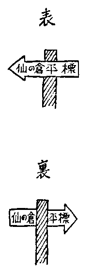

谷川岳で、又、人が死んだ。いろいろ人の死のニュースの中では、一抹清涼で、平和な生活を感じさせてくれる。
人間同士でひきおこす出来事は、祝儀不祝儀に拘らず、どことなく陰鬱なものである。人間臭というものは、何につけても身につまされるところがあって、暗い陰をまぬかれることができないものだ。しかし、相手が自然となると、人間も神様みたいなものである。
私は登山らしい登山は殆どやっていないが、一度、山で死に損ったことがあった。しかし、話にならないのである。山というような山じゃない。里の人も名のつけようがないような、どこにでもゴロ／＼している山で、おまけに、その麓、入口のようなところで死に損ったのである。
同郷の先輩で、伴という弁護士をしている人が、若いころ、夢のような生活にあこがれていたらしい。青梅の奥の日陰和田というところから、山へはいって谷川を
彼はそこで牛などを飼い、自然人の生活をやるつもりであったのかも知れない。二十何年ほど前の「改造」へ、彼はそんな夢を書いていた。当時はトーローの森の生活などが読まれたり愛されたりしていたような時世でもあった。文学で云うと、新感覚派が現れたころ。一方にコンミュニズムが、一方にロマンチシズムが、ひろがりはじめていたころ。
彼はともかく、あこがれていたばかりでなく、実際にやりはじめたのである。この中腹へ小屋をつくって住んだ。なかなか、よく出来た小屋であった。彼が自分の手だけで作った小屋だ。杉の木だらけの山であるから、その杉を切って小屋をたて、杉の皮で屋根をふいたものであるが、雨もりなどはしたことがない。小屋は十二畳ぐらいの一室があるだけ。しかし土間に屋根だけかけた吹きさらしの台所があって、まんなかに穴を掘って火をもやし自在鍋をかけるようにできている。煮物しながら読書する習慣らしく、吹きさらしの中に書棚があって、二百冊ぐらいの書物があった。吹きさらしの中ではあるが、小屋に接した羽目板の際であるから、風雨にうたれて汚れたような跡はなかった。いずれも然るべき値のありそうな書物であったが、山中に泥棒はいないらしく、主人が去って無人のまま一年以上もすぎてから私がこの小屋をかりたとき、本も鍋釜も、布団も蚊帳も、そっくりそのままであった。小屋の中にも、かなりの書物が四隅につまれていた。
彼は小屋を立てるよりも、谷川の水をひいてくるのに苦心したと語っていた。露天風呂があって、そこへ常に谷川の水が流れてくるように上流から林の中を曲りくねってトヨがひかれている。しかし私がかりた時は、無人の年月にトヨが落葉でつまり、又、谷川のとりいれ口のトヨが風雨のために流失しており、用をなさなくなっていた。露天風呂には天水がたまって、蛙が棲んでおり、私は煮炊きの水を谷川まで往復して運ばなければならなかった。これは不便なものである。非常にクモの多いところで、クモの巣を踏みきって谷川に辿りつき、水をくんで戻ってくると、もうクモの巣が修繕されて、往復ともにクモの巣の海を渡っているようなものであった。
彼がこの小屋で何年ぐらい自然生活したのか、私はよく知らないが、山中に自生する動物植物を食って、血気の仙人生活のあげく、生れた子供が骨格軟弱の不具者であったそうで、自然生活というものは人間にとっては健全なものではないらしい。彼はたそがれ時に小屋の附近に現れるモモンガーを弓で落して煮て食っていたそうであるが、私が小屋をかりた時にも、その弓はちゃんと小屋に附属していた。竹でつくった手製の弓である。私はモモンガーは食わなかった。ゲテモノは食えないタチなのである。モモンガーは本来の名はムササビ。猫の四足にコウモリの翼を張ったようなケダモノである。たそがれ時に現れるのはコウモリと同じく、木の枝から枝をとんで食物をあさる習性らしい。
私は二十の年に東京近郊の村落で小学校の先生をした。代用教員である。そこは今では東京都内の賑やかな市街地であるが、当時はまったくの武蔵野。田園と自然林の村落であった。ところが、その村に、山中の自然生活をひきあげてきた彼が住んでいたのである。彼はトルコ帽をかぶって歩いていた。私が子供たちをつれて自然林へ図画を書かせに歩いていたとき、トルコ帽の彼に
小学校の先生というものは、父兄の襲撃に手を焼くものである。自分の子供は特別な子供だときめこんでいる父兄がうるさいことをいってくるからで、こッちの公平な判断を理解してくれない。一方的にきめこんでいるばかりで、こッちの言葉に耳をかそうとする謙虚な態度も失っている。小学校の先生もおもしろいが、これが何より苦手です、と云って彼に打ちあけると、彼は静かに微笑して、
「それはね。こんなのは、どうですか。そんな父兄と話をする時には、はじめ、先方にききとれない細い声で喋るんですね。エ？ と云って、先方がきき耳をたてますね。で、次第に、きこえるように声を高くして行くのです。相手は自然にこッちの話をきこうとする態度になっているんですね」
彼はこう奥儀を伝授してくれたが、これによって私が苦手から少しでも救われたという効き目はなかったようである。この伝授は後日に悪影響を残している。私は人と話していて、自分の声が細いのに気がつくと、意識してそうしていたわけではないが、彼の伝授を思いだして、甚しく切ない気持になる。悪事、詐術を使っているような不快な思いになやむのである。しかし、伝授した彼については、おかしさと、ややなつかしさを覚えるだけで、不快な気持はないのである。
小田嶽夫と海音寺潮五郎が芥川賞をもらった時だと思うが、レインボーで文士をまねいて授与式があった。その食卓で各自の自己紹介があった。私の番がきて、立ち上って姓名を名乗ると、席を向い合っていた菊池寛が、
「キミ、もっと、大きく」
と叫んだ。私は彼と一切交遊がない。彼が私によびかけたのは、この一言だけであるが、私はこのとき、いくらか顔をあからめたかも知れない。伴氏の伝授を思いだして、この時ぐらい味気ない思いに胸をつかれたことはないのである。
又、その村には、藤田という、彼の親友の画家が住んでいた。私はその絵を知らないが、一生ナマズの絵を書いていた人だそうだ。自ら鯰魚と号していたように記憶する。無邪気な楽天家であったが、恒産があったのかも知れない。しかし、貧乏のようでもあった。生れながらに手と足の指が三本ずつしかない人であったが、そういうことが気にかかる余地がなかった。先日因果物の小屋へ見物にはいったら、人間ポンプというのと一しょに、手足の指が三本ずつの男が見世物にでていたが、そんなものが見世物になるのが、むしろ私には異様であった。三本指の藤田画伯はなんの異状もないばかりか、甚しく健康な楽天家であったからである。
藤田画伯は生来仙人の趣があったが、伴氏はむしろアベコベの天性のように思われる。しかし、生来の仙人は、わざわざ山中に小屋がけし、谷水をひいて住むような面倒な苦労はしたがらないであろう。それを敢てする人は、むしろ天性の俗物であろうが、しかし空想で終らずに本当に着手するには、夢想家にしても、山師にしても、並のものではない。彼は戦争中は猛烈な神がかりで、私は郷里の新聞に彼が神がかりの論文をのせているのを読んだが、先ずこれぐらいベラボーな論理を失した神がかりは天下になかったようである。軍人にせよ、政治家にせよ、壮士にせよ、農夫にせよ、神がかり的になり易い人士は、反面チミツな計算家で、はじめは相手にききとれないような細い声で語りだす、というような術については一生心を用いている人種らしい、と、私はそんなことを考えたりした。あの山小屋の造り主がそんな神がかりになったことが、わびしかったのである。あの山小屋は彼の終生の傑作であったようだ。
私は一夏、彼の山小屋をかりて暮すことにした。もし快適だったら、小学校の代用教員もやめて、当分山ごもりして読書しようかとも思っていたのである。
その出発の日は暴風雨の警報がでていた。なみの旅行とちがって、半分出家遁世のような出発であるから、浮世の警報などは気にかからない。家をでる時はまだ雨も降っていなかったが、途中、彼のところへ寄り道して、山中生活の細い注意をきいたので時間をくい、（彼が外出先から戻るのを待っていたので時間をくったのだ）青梅の駅へ降りた時には猛烈なドシャ降りである。すでに多摩川は水量をまして、濁流は堤をかみ、青梅の万年橋を渡る時には、今にも橋が解体しそうな心細さを覚えたほどであった。万年橋を渡ると、もう青梅の町の外れであるが、（今のことは知らない）そこに、日用品や食物を売る店がある。それがこの街道の最後の店だ。米だのミソだの、東京から背負ってゆく必要のない時であるから、なるべく重い目をしないように、町外れの最後の店で仕入れようという次第で、彼から最後の店の所在をきいてきていたのである。家から持って出たのは書物と衣類とカンヅメだけであった。
一夏の食料を買いこむと、大変なカサになった。米、ミソ、醤油、アズキ二貫目、砂糖、塩、ジャガ芋、カボチャ、キャベツ、等々。全部はリュックに入らないから、野菜類は二ツの南京袋に入れて縄でくくって、リュックの両側へぶらさげた。
アズキ二貫目はなんのためかと云うと、私は無性者であるから、なるべく炊事の手間を省きたい。美食せずとも、生き永らえるだけの食物をなるべく簡単に食えればタクサンだという天性のナマケ者であるから、米を炊くと、オカズが必要である。主食とオカズ、二度三度と手間が多い。ところがアズキは主食とオカズを兼ねたようなもので、ユデアズキに砂糖をぶっかけてそれだけで一食すませることができる。実にカンタンであるから米食とアズキ食と一日交代にやったら、生命に別状もなく、アズキの日は手間が省けて助かるだろうというコンタンなのである。
私はカボチャが好きではないのだが、保存のきく野菜はカボチャだと店の者が教えてくれたから、カボチャも買った。好き嫌いよりも、面倒を省くのが目的であったが、結局カボチャは一度も食べなかった。嫌いな物は、食いたくならないのは、当り前だ。
とうとう、ここで十貫目ぐらいの荷物ができてしまった。雨は益々物凄く、この山中に四百ミりだか五百ミリだかの大雨が降った当日で、この雨と荷物のおかげで、死に損いもしたし、危く命が助かりもした。
日陰和田まで歩く。谷川がある。そこに狸を祭った祠があって、そこから山の中へ谷に沿うて曲りこむのである。私は里の人に狸のホコラ、狸のホコラ、と聞きながら歩きすすんでいたから、怪しい顔でジロジロと見られ、とうとう巡査がドシャ降りをついて自転車で追っかけてきた。私から事の次第をきいて納得し、狸のホコラまで案内してくれたが、彼は自転車をひっぱりながら急ぎ足で突き進むから、重い荷を背負った私は、彼に足を合せるために疲れきってしまった。すでに狸のホコラまでで精根つきた感があった。
ここから、いよいよ山中にはいる。谷に沿うて行くと丸木橋が渡してある。それを渡って登ると、彼の山小屋へ辿りつける筈なのだが、このドシャ降りで丸木橋が流失したということを、気付くのがおそすぎた。
谷に沿うて小径を登りつめると、山径は谷と区別がつかなくなる。道自体が岩であるから、ドシャ降りが山から流れて径を流れ落ち、道だか谷だか分らない。そして、そのうち、まったく、谷になってしまう。やむなく、径の岐路まで戻ってきて、別の一方を登りはじめる。これも道だか谷だか分らなくなって、しまいに谷以外の何物でもなくなる。
すべての道はローマに通じなくとも、里から里へ、いずれは人の居るところへ通じるのが当り前だが、山の径だけは、ダメです。木コリだけの歩く径が主で、どこにも通ぜず、山の奥で自然消滅するのである。どの径を歩いても丸木橋は現れず、径は山中で自然消滅してしまうから、私もようやく、丸木橋が流失したと悟った。しかし、丸木橋のあった場所の対岸に小径があるはずだから、それを探せば山小屋へ行けると気がついたが、この対岸の小径は彼だけの私用の径で、木コリも通らず、一年半も留守にしているから、径の姿を失っていたのである。だんだんタソガレがせまってきた。私の精根はつきた。そして、アッと思った時には、足をふみすべらして、深い谷底へ墜落してしまった。
私は谷底へ落下しながら、アア、いよいよ死ぬのか、なんだ、死ぬ時は、こんな気持なのか、と一瞬のうちに思った。私の頭に閃いたことは、それだけだった。そして、なんでもないもんだナ、と思った。なんでもない筈である。疲労コンパイ。その極に達して、あらゆる力を失ったというアゲクに自然に谷底へ落ちたのである。
ところが、私は死ななかった。それどころか、怪我一つしなかった。十貫目のリュックサックのオカゲである。私は岩の上へ落ッこったが、実はリュックサックの上へ落ッこったような結果になった。落ッこったところから傾斜がはじまり、次に私はその傾斜をゴロンゴロンと、ひどくユックリと谷底までころがって行った。私に少しでも精根があれば、傾斜の途中でいくらでも止ることができたのだが、まったくもう一片の意志も抵抗も浮びあがらないのである。今度こそ死ぬな。なんでもないもんだな、死ぬ時というものは、と私は又思った。そしてゴロンゴロンところがり、最後に再び一丈ほど墜落して、谷川へはまってしまった。
谷の岩と岩の間の深間のところへスッポリ落ちたのである。
又、死ななかった。一尺でも場所が狂うと、私は死んだのであるが、実に巧いところへ落ちたもので、岩と岩の間にリュックサックがつまって、私の鼻から上だけが水の上にでているのである。私は完全に無抵抗状態であるから、鼻が水上にでていなければ、自分で起き上って鼻をだす精根も分別もなかったのである。ふと気がつくと、私は息をしているし、鼻から上だけ水の上へ出ているのだ。オヤオヤ、死ななかったのか、と私は気がついた。
ジッとしていると、次第に意識が戻ってくる。尿意を催してきた。私の手も胴も足も水の中にある。私は水中でズボンのボタンを外した。そして小便しようとすると、意外なことが起った。いくら手さぐりで探しても、放尿すべきホースがないのである。ホーデンもなければペニスもない。いくら手探りしてもノッペラボーである。
疲労その極に達すると、みんな腹中にもぐりこんで、こんな風になるものだそうだ。おまけに私は谷川の中につかっているのだから、それが一そうひどかったらしい。当時はそうとは知らないから、このときの私のオドロキというものは、話の外である。私はもがいて起き上ろうとしたが、どッこい、そう簡単には起き上れぬ。まだ、それだけの精根は戻らない。落下しつつ死ぬナと思った時にはいささかも慌てなかったが、一物の消滅にはことごとく慌てふためいたのである。
私ははじめて自分の身体に怖るべき異常が起ったことを認めた。水中から手をだして、目の前にかざしてみると、まったく暗い紫の色である。斬り落した鬼の手を眺めているようで、人間の皮膚の色として、想像しうる色ではない。爪の色も同じ暗紫色に変っている。私はもう男でもなくなったし、常の皮膚の色まで永久に失ったのかと早呑みこみをしたほど悲しかったのである。そのうちに、腹の中から生あたたかい尿水が流れでたので、ようやく一縷の勇気、希望をとりもどした。疲労コンパイのアゲク、一時的にこうなっているのかも知れないと思うことができたからであった。
こうして水中にジッとつかっているうちに、谷はたそがれ、ようやくいくらかの精根が戻ってきた。とても上の径まで登る力はないと生還をあきらめていたのであったが、精根が戻ってくると浮世の才覚も戻ってきて、ナニ、上の径まで登らなくッとも、谷川ほど確実な径はない。山の径はたまたま自然消滅して人里へ通じてくれない場合があるが、谷川というものは、必ず人里へ通じるものである。これぐらい確かな道はない。おまけに谷川を渉りつつ、目を皿にして対岸を吟味して行けば、丸木橋のかかっていた径の跡を発見することができるだろう、と判断がついたのである。そして、勇をふるッて岩と岩の中から身を起し、ついに、とっぷり暮れようとする寸前に山小屋へ辿りつくことができたのである。翌朝、目を覚すと、私の全身はいたるところ大きなコブをつけたように腫れあがり、殆ど身動きもできなかった。砂糖や塩や味噌は原形を失い、ドロドロになっていたが、それらが私の一命を助けてくれたものとして、なんとも有難く、いじらしく見えた。一日二日は身動きできず、そのドロドロをなめながら、ケダモノの穴ゴモリのような気持で一陽来復を待っていたのであった。
私は、しかし、この小屋に長くはとどまらなかった。ちょうど、この豪雨で、小屋のうしろの崖がくずれて、小屋に異常はなかったが、便所だけつぶれてしまった。その異変のためにネグラを失ったのかも知れないが、毎晩一匹の蛇が小屋の梁に巻きついているのである。日中はいなくなるが、夕方になると、巻きついている。よく見ると、どうもマムシらしい。夜中にマムシに襲撃されては困るから、蚊帳をつり、蚊帳の裾を百冊ぐらいの書物で隙間なく押えて眠ることにした。そんなことがあって、山の生活も、それほど気楽なものではないと分ったので、山中隠遁をあきらめて下山した。
この小屋は後に同郷のコンミュニストで山添という人が、出獄後、遁世して住みつき、数年、もしくはより長く住んでいたらしいが、彼の奥さんは、とうとうマムシに噛まれたそうである。しかし、生命には別状なかったそうだ。
谷川岳は美しい山だ。私の故郷はあの山の向う側にあるので、その往復に車窓から眺めながら、季節々々にいつも美しい山の姿に見とれることが多かった。とりわけ冬は美しいが、それはあらゆる山がそうなのだろう。目には親しい山であるが、私はまだこの山に登ったことはない。
私は自分がいち早く、青梅近在の名もない山の入口で非常に気楽に死に損って、その印象があざやかで、なつかしいせいか、人々が山で死んだという話には、なんとなく清涼な感慨を覚えて、人の死について感じるような暗さを知らないのである。
しかし、今度の場合は、生還した女性が一人いて、その人の報告によると、何者かが道標の方向を逆に変えていたために遭難したのであるという。まことに由々しい話である。
私は犯罪には興味をもっている。人間について興味をもてば、犯罪に興味をもつのは自然のことだ。そして、犯罪というものは、ともかく当人がギリギリに追いつめられてセッパつまった感があるから、救いもあるし、憎めないところもあるのが普通である。ハタの目から見れば、そうまでセッパつまらなくとも、ほかに身をかわす手段はありそうに思われるのは当然だが、当の本人はそうは自由に冷静な目で八方に目が配れるものではない。感情のモツレというようなものは、どんなに理に勝った人でも、理だけで捌けるものではないのである。
罪というものは、本人が悔恨に苦しむことによって、すでに救われている。悪人の心は悲しいものである。ところがここに善人の犯罪というものがあって、自ら罪を感じない場合がある。大官を暗殺して、天下国家を救うつもりであったと豪語し、罪人どころか、ひそかに自ら救国の国士英雄を気どるような連中は云うまでもなく、教え子、使用人、子供などをセッカンする教師、上役、親父の類に至るまで、善人の犯罪は甚だ少くない。
主人や親に抵抗するのを悪事と見るのは、古来の風習であるが、召し使われる者や子供にも悲しく切ない理のあるもので、カサにかかって理を理として執りあげることを忘れて特権をふり廻す。だから、感情はモツレにモツレ、抑圧に抑圧を重ねることとなり、主殺しとか、親殺しというものには、最も殺して然るべき理由があるのが通例なのである。この理をわきまえずに、主殺し、親殺しを重く見るのは封建遺制にとらわれて正しい判断を失した者の云うことである。はじめから主や親に加担した法律などというものは、文明開化の世に在りうべきものではない。過去の妖怪にすぎないのだが、日本の法律は未だに妖怪のまま君臨しているという悲しむべき状態なのである。
出征した良人が外国から外国婦人をつれて帰還した。内地で待っていた妻と、外国婦人にとっては、その去就まことに真剣な問題であるが、昔同じような立場に立って良人と離婚したことのある婦人代議士が日本人の妻の方を訪ねて、私がそうであったように、あなたも身をひきなさいと忠告したということなども、婦人代議士は善意と親切のツモリで自分の罪を感じていないのだから、やりきれない。自分と人は違うものだ。人間関係も環境も、まったく人によって別々なのが人間というものの在り方で、したがって人間関係を解く公式というものは永遠に在り得ない。めいめいが自分の一生を自分で独自に切り拓くべきものである。それぐらいの理も弁えずに、自分がこうだから、あなたもこうしろという思いあがった善良さは、まことに救いがない。善人の罪というものは、やりきれないものだ。
無邪気の罪も同じことで、道標のムキを変えるというイタズラは、その結果についての怖るべき罪をさとらぬ無智のせい、悪意はなくとも、無智ということ自体が罪だ。悪意がないだけ、救いがない。
しかし、今回の谷川岳の道標事件は、永遠に犯人は分るまいと思いのほか、まるで筋のよく出来た探偵小説を読まされたように、次から次へ謎がとけて、その結末も谷川岳の美しい姿にふさわしく、一抹清涼の感をともなって幕を閉じたようである。
この結末も、結局は無智の生んだ罪であるが、身につまされて、悲しい罪ではある。
法師温泉の主人公が、本人はさとらずに、道標を書きちがえていたのである。彼は矢印の形をした道標に、先ず、矢印を左にして左書きに、仙の倉平標と書いた。さて、その板を裏返しにして、又、左書きに、仙の倉平標を書いた。板を同じ方向のまま裏返しにすれば字が上下逆さまになるから、上下逆さまにならないように裏返して、左書きに書いた。ところが、上下逆さまにならない代りに、今度は左右逆さまになることを彼は気がつかなかった。つまり表を左書きにしたから、裏は右書きにしなければ、表裏同じ方向を指さないのだが、彼はそこまで気がつかずに、上下逆さまにならないことにだけ注意して、どっちも左書きにしてしまったのである。その結果、次のような道標ができたのである。

即ち、表と裏は矢印の方向に全く逆を指し合っているのである。道標を立てる位置をまちがえたというのは当らない。この道標は、天下のどこへ立てても完全に通用しない。なぜなら、表裏アベコベを指しているからだ。もとより、法師温泉の主人に悪意のあろう筈はない。彼は、両面上下をそろえて左書きの結果が、アベコベを指し合うことを気付かなかったのであろう。
この怖ろしい事実が判明したとき、私はふと、私の義兄である村山紅邨という、越後山中の造り酒屋の主人公の歌人のことを考えた。彼はその山中に六百年ほど代のつづいた旧家の主人で、雑学の大家でもある。だいたい田舎の旧家には、雑学の大家が多い。こんな山中にと思うところに、案外にも、西洋の大学の卒業生だの、十年も西洋で暮してきたというようなヒマ人が、ほかに仕方がないから出る新刊を次々と取り寄せてヒマにあかして読んだり寝たりしているのである。私の義兄（私の長姉が細君）紅邨もヒマにあかした雑学家で話の泉のお客ぐらいは楽につとまる物識りであるが、田舎の雑学の大家に共通していることは、大事の心棒が一本足りないということだ。大事なカンドコロ、理づめの理の心棒が欠けている。つまり、谷川岳の道標を書かせると、上下が逆さまだというのに気がついて、頭だけ逆さまにならないようにそろえるまでは気がついても、今度は左右逆の方向から書かないとアベコベの方向を指してしまうということまでは気がつかないような脆さがある。
幸い彼の住む山中は、まことに山も深く、雲も雪も深い山中ではあるが、附近に都人士が来り登るような名山がない。もしも谷川岳が彼の附近にあれば、土地の青年団とか世話人とかが、道標を立てるについて、その文字を書いてもらいにくるのは、彼のところにきまっている。と、彼は、大いに注意深く、熱心に書いたあげく、ついに登山家を死に至らせるような、天下どこに立てても通用しない表裏アベコベを指し合っている道標を書くようなことになったかも知れない。
私は彼でなくて良かったと思ったが、彼ならば同じマチガイをしたかも知れぬと思うと、身につまされて、やりきれなかった。
私がこの道標を書いたなら、マチガイは起さなかったであろう。しかし、それは程度の問題である。この道標の場合にはマチガイは起さぬけれども、これ以上複雑な、又、盲点をつかれる事情があった場合には、私も必ずマチガイを起す。私ばかりではない。あらゆる人が、マチガイを起す可能性があるのである。盲点のない人間は存在しないのだ。
これも無智の罪ではある。しかし、子供が道標の向きを逆にするようなイタズラとちがって当人は精一ぱい誠実であり、ミジンもイタズラ気がないのであるから、悲しい。アベコベの道標は、たしかに五人の生命を奪っている。怖るべき無智の罪ではあるが、あらゆる人間にまぬがれがたい悲しい罪でもある。自分はそのような罪を犯していないというのは怖れを知らぬ言葉で、いつ、どこで、これに類する罪を犯すか、のみならず、当人は犯した罪には気付かないのだ。
谷川岳のような人の多く死ぬ山で、人死にを少くする設備が殆ど施されていないらしいのが奇妙であるが、県の観光課とか日本登山家協会とかその専門の方面が責任を持って道標を立てずに、地元の民間人にそれを任せて済ませておくというのが第一の手落ちであろう。その手落ちは咎めることができるが、道標を書いた民間人の、悲しい罪は、どうにも、憎めない。わが身の拙さ、わが身の悲しさに思い至り、身につまされて、やりきれなくなるばかりである。人はどんなに善意をつくしても、このような切ない罪からまぬがれることは不可能なのである。この罪からまぬがれる唯一の方法は、一生何もしない、ということだけだ。
原子バクダンの発明以来、文明はその極限に来たかのような考え方が少からず行われているようであるが、原子バクダンなどというものは人を叩きつぶすだけの道具で、人を殺すぐらいカンタンなものはありやしない。人間が全然無智蒙昧な半獣人のころから、丸太ン棒一本あれば人を叩き殺すぐらい面倒はいらなかったものだ。
しかし、人のイノチを助け、病気を治すという方面を考えると、殆ど文明などというものは、未だによそを吹く風ではないかどいう気がする。人体の機能すら、いまだに正体は判然としていやしない。ゼンソク持ちはタクサンいるが、その正体も判然とせず、特効薬も未だしである。肝臓の機能は？ 脳味噌の機能は？ それも判然とはしない。貧乏人をなくする方法は？ それも判然とはしない。文明などというものには、まだ大そう道が遠いのである。法律ですら、まだ親殺しという特罪が残っているような実状である。
私はしばらく帰省しないので、谷川岳の姿にも久しく接していないが、今回の事件であの秀麗な山容を思いだし、なつかしむこと頻りであった。人間の拙さ、無智と、その悲しい罪が、あの清涼な山のごとくに、身にしみる。五人の霊と共に、人間の拙さも、同じように、あわれまれてならない。
新年号であるから、風流について一席談じてくれということであったがこれが風流譚かどうか、まことに、おはずかしい次第です。
末尾ながら、明けまして、おめでとう。ウソつけ。今日は何日だ。そうか。いつだって、明けまして、おめでたいや。アバヨ。